MALAYSIAN SNR
The best strategy that you can use in prop firms accounts and for personal accounts
I can guarantee that to you if you master this ,you master everything
PLACE IT NOW ,CLAIM IT LATER
HELLO TRADERS
I will give you all what you need to become successful in the market by a simple strategy
based on Malaysian SnR, all what I need form you is to become a flexible with the informations
that I will give you step by step until you get it
Well, we will start by learning the basics of MALAYSIAN SNR strategy, after that we will get into
the setups.
Don’t worry I will ask some questions and answer them for you, okay?
And the rest of the questions that will come to you when you will practice the strategy you will answer them by your self,
•
THE BASICS:
-Snr levels
-fresh |unfresh
-breakout
-storyline
•
SETUP:
-storyline
-breakout
-confirmations
LEVELS>
1-classic snr V|A shapes (2 opposite candles (buy+sell))
2-open close snr (2 same candles (buy+buy|sell+sell)
CLASSIC SNR
OPEN CLOSE SNR
A SHAPE:
V SHAPE:
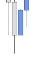
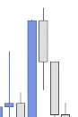
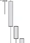
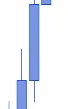
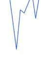
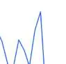
CLASSIC SNR:
1-A shape snr
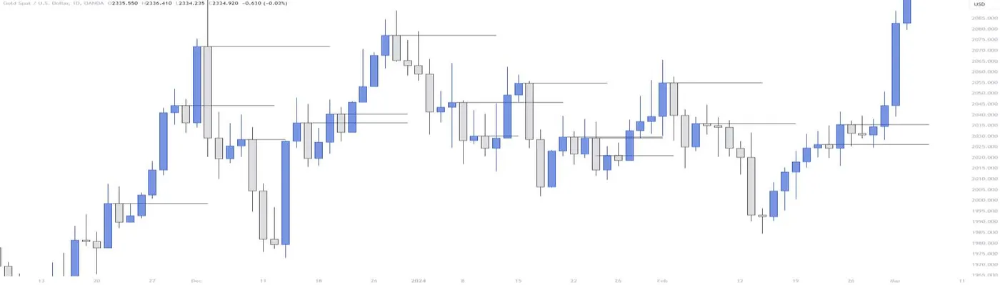
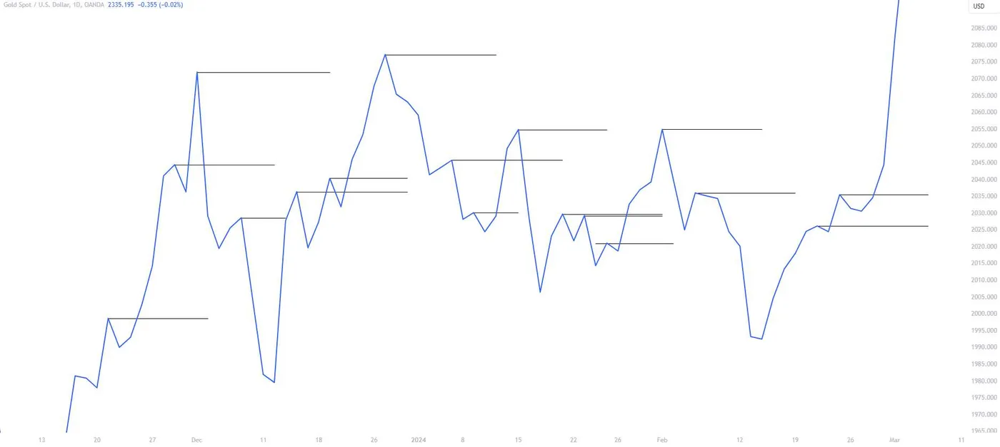
2-V shape snr
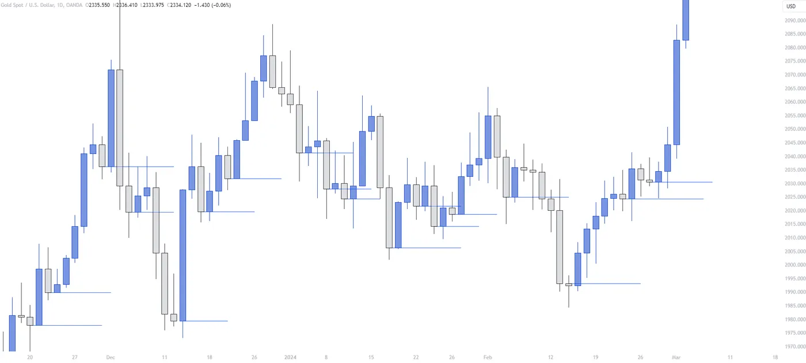
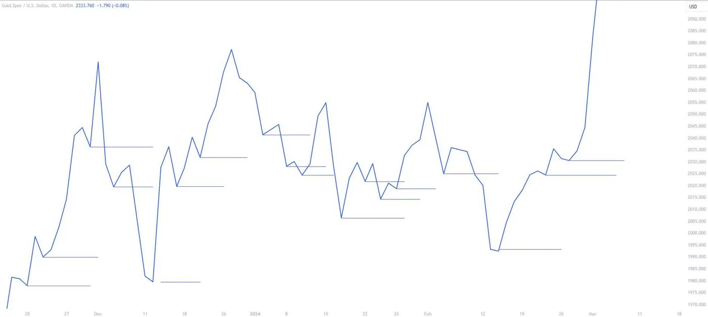
3-open|close shape snr
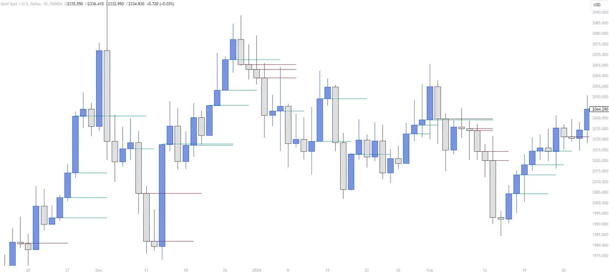
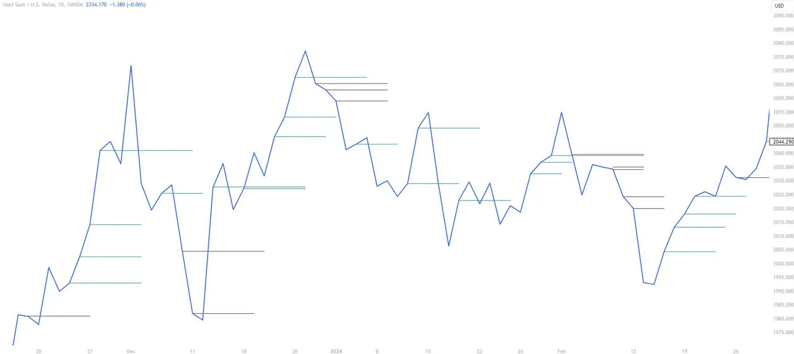
Fresh|UnFresh Levels>
• Levels are fresh until touched
• If touched with a wick it’s unfresh.
F: fresh
UF: unfresh
F
F
F
F
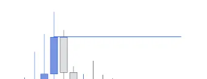
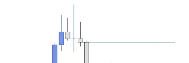
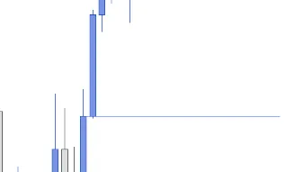
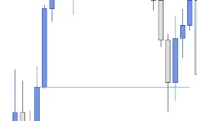
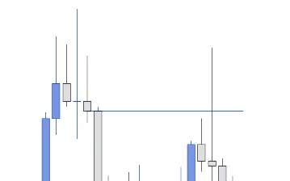
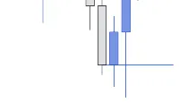
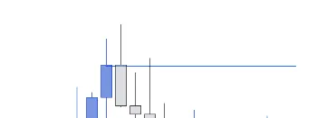
UF
UF
UF
UF
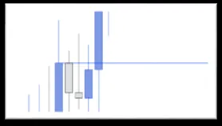
• Once broken with a body, it becomes fresh again.
• the level Can be used only 2 times.
F
one : fresh>unfresh |two: fresh>unfresh
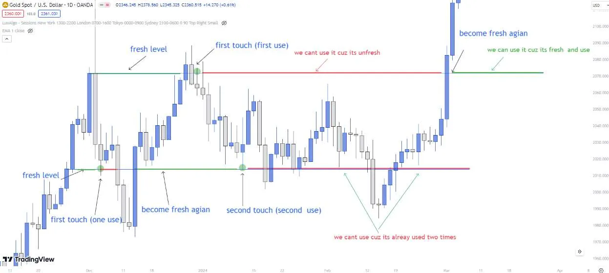
EX1:
FIRST EX:
Answer with yes or no
1- A Shape Levels is two candle in the same direction
2- V Shape Levels is two candle in the same direction
3- gap levels is two candle in the opposite direction
4-fresh levels is already teach it with a candle weak
5-once the levels broken with a body is become unfresh again
6-the levels can be used more then two times
If your answer is no then you pass to the next EX if your answer was yes you need to read the lesson again.
SECOND EX:
1- Mark 100 A shape levels
2- Mark 100 V shape levels
3- Mark 100 gap SNR levels
the more you mark the more you get it
Use different pairs for to get more experience with the levels
use this and you can chose more
nas100|gbpusd|usdcad|xauusd
THIRD EX:
1- mark 100 FRESH A shape levels
2- mark 100 FRESH V shape levels
3- mark 100 FRESH Gap SNR levels
the more you mark the more you get it
BREAKOUT >
Bullish breakout:
Bearish breakout
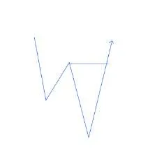
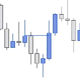
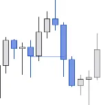
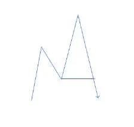
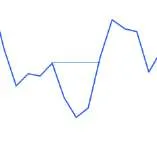
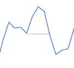
STORYLINE>(DIRECTION)
• The important of storyline
-determine the direction of the market movement if it bullish or bearish
-the beginning and the end of the direction
sooo if you know the direction you just need to look for the setups , amazing hah?
in this pdf I will put the perfect setups that you use with the storyline and how you can
catch the whole movement by the low risk setup.
What we need for the story line?
We need :
- fresh levels
- rejection candle with closing(become unfresh after rejection)
- breakout
What timeframes that we can use to identify the storyline?
-WEEKLY AND DAILY
“The end of storyline it’s the start of another storyline in the opposite direction”
“The start of storyline it’s the end of another storyline in the opposite direction”
WEEKLY STORYLINE:
1- fresh level: weekly
2-rejection: weekly candle
3-breakout: daily
weekly chart
daily chart
DAILY STORYLINE:
If we have 1+2+3=bullish or bearish storyline
started
1- fresh level: daily
2-rejection: daily candle
3-breakout: 4hour
daily chart
4hour chart
But, what about the other timeframes?
-we only use 4hour|1hour for setups
-1min|5min for confirmation
I will explain these later. For now we have to focus on the storyline
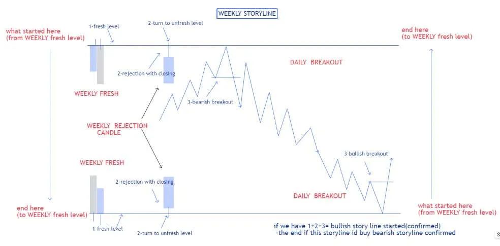
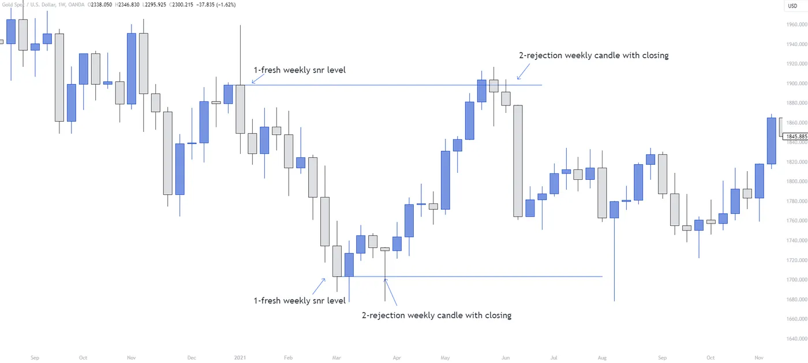
(1+2) in the weekly chart
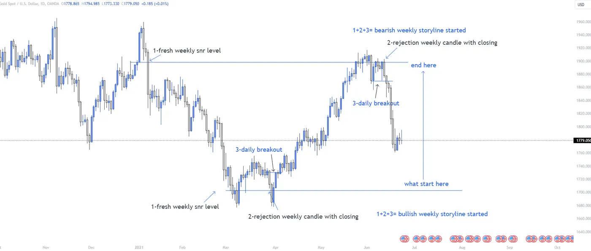
(3) in the daily chart
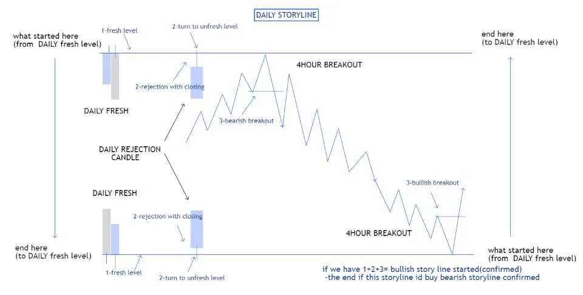
”
PITCHOU.FX
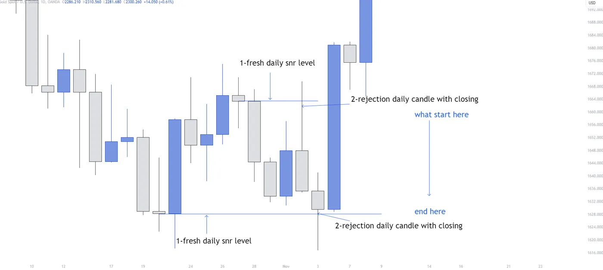
(1+2) in the daily chart
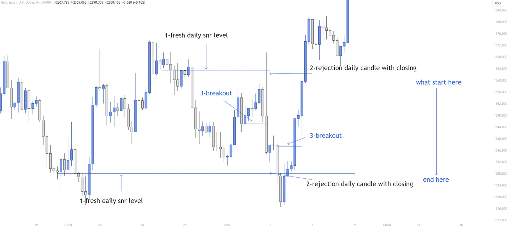
(3) in the 4hour chart
“The end of storyline it’s the start of another storyline in the opposite direction”
“The start of storyline it’s the end of another storyline in the opposite direction”
RULS WILL GET YOU UNDERSTAND THE STORYLINE:
“The end of storyline it’s the start of another storyline in the opposite direction”
“The start of storyline it’s the end of another storyline in the opposite direction”
1 • Price taps fresh level
2 • price rejects with a wick(closed).
3 • one TF lower must complete breakout
• Price then goes from one fresh level to at least another fresh
level ( D to D, W to W).
Weekly – Main Direction.
DONT WOORY, I will give you more details later cus I am giving you the impartant
things first
for understanding the rest.
Daily – breakout for weekly .
H4 – breakout for daily and setups.
H1 – refining for entry .
For now, we have learned :
what is snr levels and how price move between these levels wich is STORYLINE, and
we learnd what is a fresh levels and how the storyline created|started and ends(start of another storyline
in the opposite direction) and we learn that the storyline start by breakout and ends by breakout,
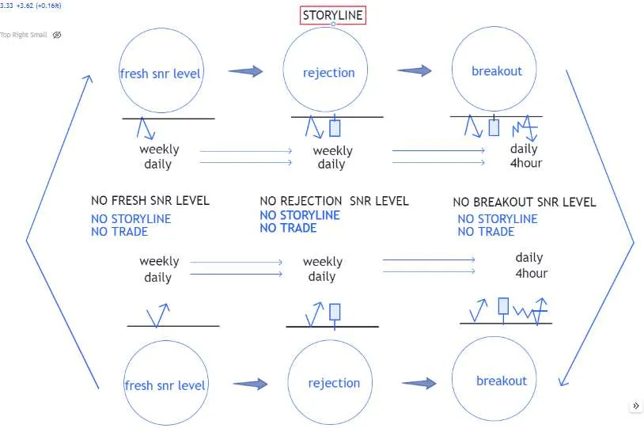
Weekly –daily storyline:
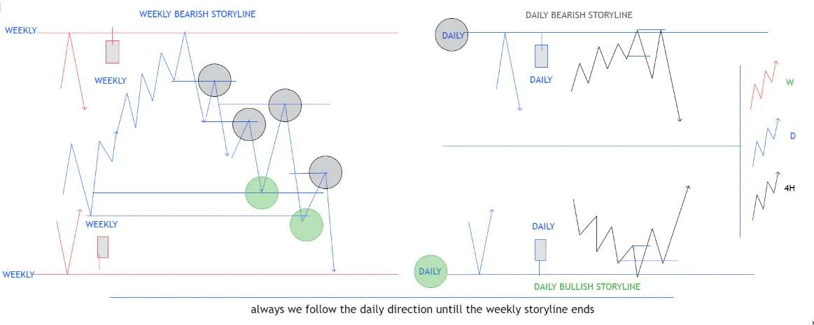
Weekly –daily storyline:
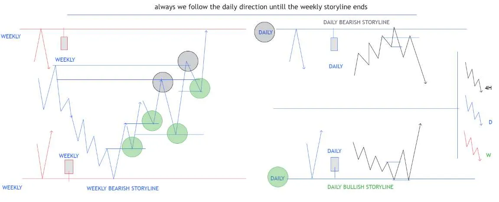
“DON’T DO THIS MISTAKES”:
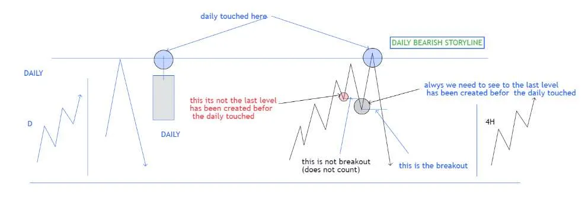
4H
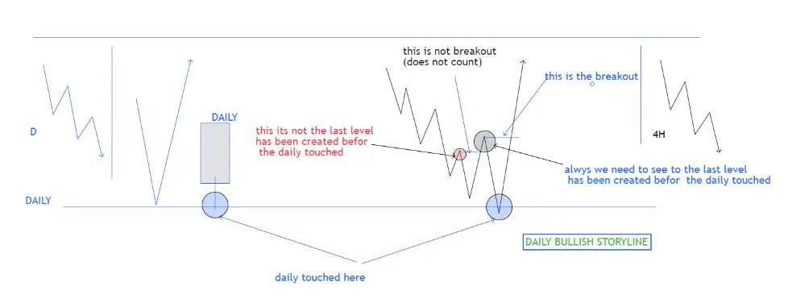
4H
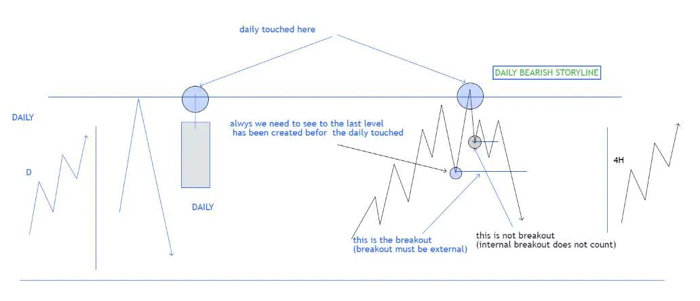
4H
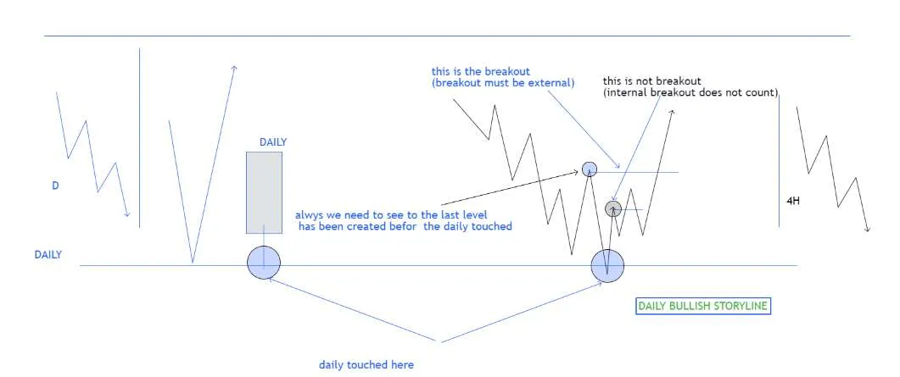
4H
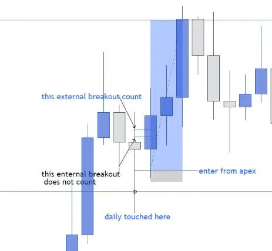
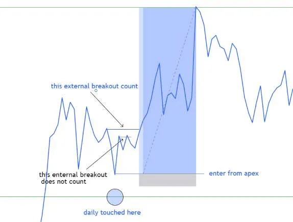
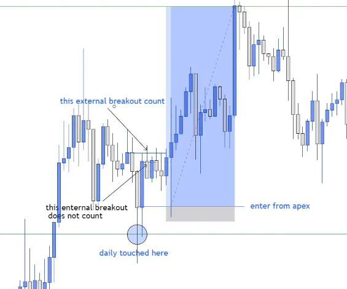
Daily chart
4hour chart
4hour chart
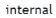
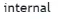
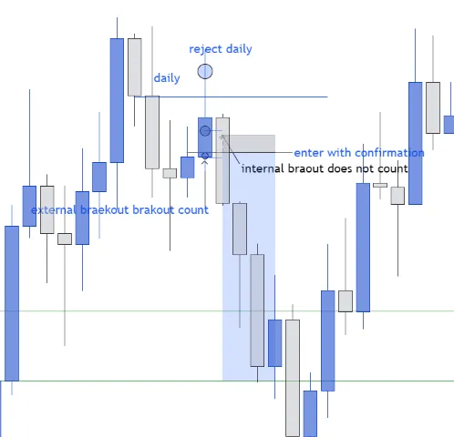
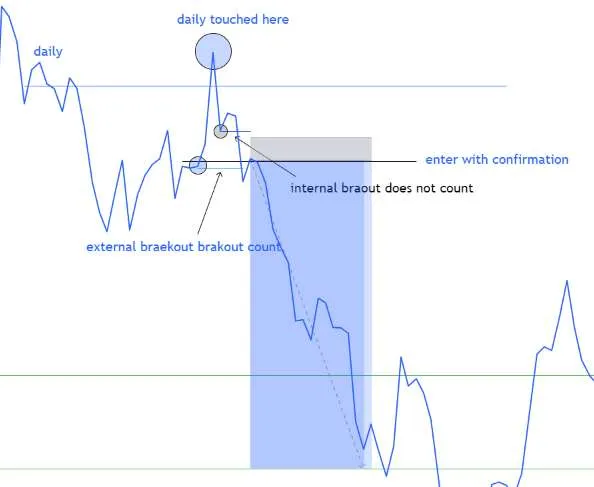
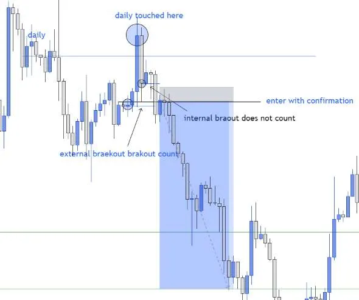
Daily chart
4hour chart
4hour chart
AFTER WE LEARNED AND UNDERSTANDED THE STORYLINE HOW CAN I TRADE?
Before that ,We will learn something that we call it head and shoulders pattern(HNS)
If you notice that the storyline line always start with HNS
if we are in weekly storyline we need to see DAILY HNS
if we are in daily story line we need to see 4HOUR HNS
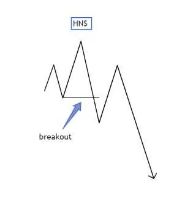
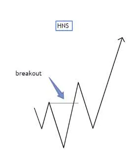
SO after we learned what is the QM and the levels that on it, how can I take trade?
- for taking your trade know this
,that it is the price always shoes one of this levels to react from them so from the apex you need to put limit and go to sleep
but for Take the trade from QM-GAP-SBR|RBS you need the confirmation

what is the confermation?
The confirmations is something that if happen on one of this levels QM-GAP-SBR|RBS we just take a trade dipends on it.
We use 1min|5min timeframes for confirmations
1- DAILY REJECT DAILY
2- 4 HOUR BREAKOUT
3- CONFIRMATION
4- ENTRY
Daily chart
- STOPLOSS
30pips from apex|20pips from others
- TAKE PROFIT
200pips|or until fresh levels
- BREAKEVEN 30pips
- RISKMANAGMENT 1% |0.5% per trade
Confirmation:
4hour chart
5 min chart
4hour line chart
Confirmation
4hour chart
1-DAILY REJECT DAILY
2-4 HOUR BREAKOUT
3-CONFIRMATION
4-ENTRY
5min chart
- STOPLOSS
30pips from apex|20pips from others
- TAKE PROFIT
200pips|or until fresh levels
- BREAKEVEN 30pips
- RISKMANAGMENT 1% |0.5% per trade
Daily chart
1-DAILY REJECT DAILY
2-4 HOUR BREAKOUT
3-ENTRY from APEX
- STOPLOSS
30pips from apex|20pips from others
- TAKE PROFIT
200pips|or until fresh levels
- BREAKEVEN 30pips
- RISKMANAGMENT 1% |0.5% per trade
1-DAILY REJECT DAILY
2-4 HOUR BREAKOUT
3-ENTRY from APEX
- STOPLOSS
30pips from apex|20pips from others
- TAKE PROFIT
200pips|or until fresh levels
- BREAKEVEN 30pips
- RISKMANAGMENT 1% |0.5% per trade
DAILYSTORYLINE+WEEKLY STORYLINE
1 -weekly fresh
2-reject weekly
3-daily breakout
weekly bearish storyline confirmed
1 -daily fresh
2-reject daily
3-4hour breakout
daily bullish storyline confirmed
1 -daily fresh
2-reject daily
3-4hour breakout
daily bearish storyline confirmed
1 -daily fresh
2-reject daily
3-4hour breakout
daily bearish storyline confirmed
1 -daily fresh
2-reject daily
3-4hour breakout
daily bearish storyline confirmed
Weekly view for the full storyline line
daily view for the full weekly storyline line
4hour view for the full weekly storyline line
EX2:
FIRST EX:
Answer with yes or no
- The breakout is necessary for the storyline
- No breakout no storyline
- Breakout with a week does not count
- Breakout is with a candle body
- The internal breakout does not count for the storyline
- The breakout Must be external for the story line
If your answer is yes then you pass to the next EX if your answer was no you need to read the lesson again.
SECOND EX:
- without storyline you can not be able to trade
- no storyline no trade
- follow the daily storyline in order for weekly finish storyline
If your answer is yes then you pass to the next EX if your answer was no you need to read the lesson again.
THIRD EX:
-mark last 30 daily storyline in xauusd|nas100|gbpusd|usdcad
-mark last 30 weekly+daily storyline xauusd|nas100|gbpusd|usdcad
get ready to get some confuse when you try to mark the story line with the setups but you will understand
it in the end just keep try and keep it simple and everything we be cleaaar to you.
For Now we have learned every things from the basics for taking trades ,right?
what do you think if I give you some confluences to take a perfect trades and setups.
for making this happened we need to learn 03 more things:
REFINING
TREND LINES
ASSIAN SESSION
-using Asian session like a confluence
-highs and lows of Asian session liquidity always
taking by London|newyork sessions
-Looking for freshest level inside a fresh
levels
-looking for fresh levels inside unfresh
levels
-looking for fresh levels when we have a
deep drawdown by the week
-We use trend lines like a confluence
-trend lines use like a support and
resistance
•
Trendlines types:
outer TR
break and retest TR
•
Refining timeframes:
30min __1hour
1hour __ 4hour
-if we are in sell the 1hour level always
must be above origin 4hour level
-if we are in buy the 1hour level always
must be under origin 4hour level
use the 4hour |1hour trend line
REFINING:
ASIAN SESSION:
TREND LINES:

STORY LINE+REFINING+ASIAN SESSION+ TRENDLINE
WEEKLY+DAILY STORYLINE EXEMPLES:
EX:
FIRST EX:
-mark 40 trendline from each type that you have learned(20*4 =160 trendline )
-use this indicator to mark asian session: sessions luxalgo ,
SECOND EX:
I need a favor from you in this EX:
first I need you to open your chart and look to asian session boxes mark them.then I
need you to find a storyline in that zone and then put every things to gather, look for a
perfect trendline that match with the storyline and then just keep watching the beauty
of the setup that you found.
TRADING PLAN:
Never let a desired
monetary goal make you
throw away your trading
rules
-TYPE
intraday|swing
-PAIRS:
xauusd-gbpusd-nas100
btcusd-gbpjpy-usdcad
-TIME TO TRADE:
Stop intellectualizing
everything. When you get
an entry signal, take it.
When your stop-loss is
hit, get out. That's it.
That's all there is to it.
london+ newyork sessions
-TIMEFRAME :
weekly and daily for storyline
4hour for entry
1houe for rifinin inside 4hour
5min|1min for confirmation
-RISK MANAGMENT:
0,5%|1% per trade
2losses for the day
Maximum loss of -2R loss on a day and you must stop.
`
Forget about money. Trading is about the movement of the herd ―what people do repeatedly under certain conditions.
Trade that. You won't get it right all the time, but even if you're right just 3-5x out of 10, you can do really well for
yourself
Consistent traders trust their process because they have experience. Struggling traders trust their emotions because they
lack experience
“Self-control is strength. Right thought is mastery. Calmness is power.” ~ James Allen
Stop intellectualizing everything. When you get an entry signal, take it. When your stop-loss is hit, get out. That's it.
That's all there is to it.
"You have to learn how to lose; it is more important than learning how to win." ~ Mark Weinstein
You don't need a big edge to succeed as a trader, but you do need excellent risk control skills. Risk control is your best
line of defense against market uncertainty.
Switch your mentality from "I'm a loser, I'll never get anywhere" to "obstacles are the teacher, pain helps me grow."
We live in a dopamine-addicted world. People don’t take the time anymore to learn one thing, stick with it, and master
it. The moment they’re not getting their dopamine fix, they quit and move on to something else that promises fast and
easy results
“Two things define you: Your patience when you have nothing and your attitude when you have everything.” ~ George
Bernard Shaw
PLACE IT NOW ,CLAIM IT LATER
wait us for more setups ,more informations to get you better and
batter after you master this and been profitable trader.
GOOD LUCK.
TL: PITCHOU.FX
feel free to ask me: